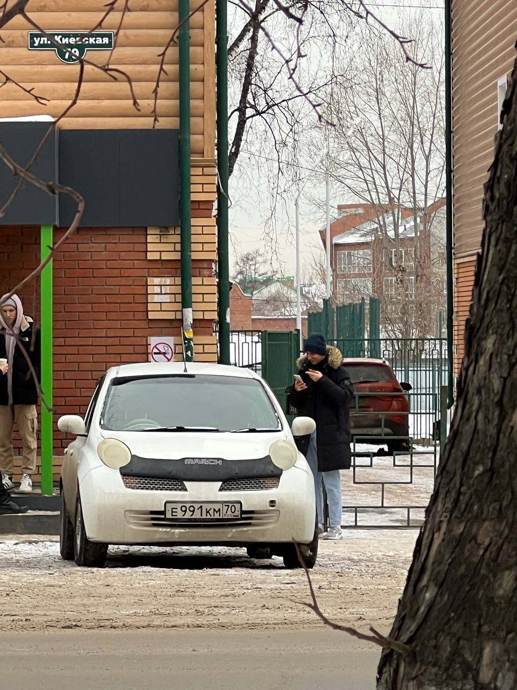

Интерес к автомобилям
В свободное время я часто исследую технические характеристики автомобилей. Это хобби помогает мне лучше понимать, как устроены машины, какие технологии используются для повышения их производительности и комфорта. Я также слежу за новыми моделями и тенденциями на автомобильном рынке.